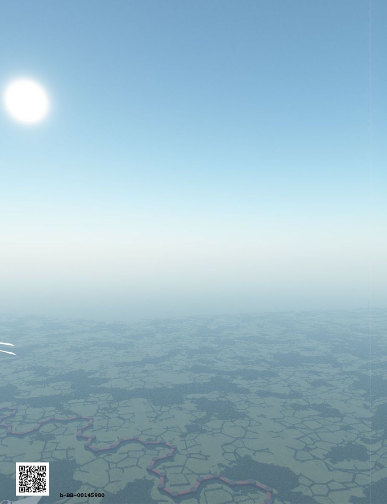

| ファンタジー世界構築のための質問リスト①: ワールド・物理歴史・魔法編 (RasenWorks) | |
| 神楽坂らせん | |
| RasenWorks (2016) | |
Patricia C. Wredeによる"Fantasy Worldbuilding Questions" http://www.sfwa.org/tag/world-building/ の日本語訳です。
月刊群雛2014年08月号～2015年02月号まで全５回連載された「異世界構築質問リスト」をまとめました。
───────────────────────
はじめに
この質問リストは、自らの創作物語のために、現実感あふれる架空の世界観を構築しようという、ファンタジー作家の試みを支援するものです。これらの質問の多くは、ある物語にとっては参考になったり不可欠であったりしますが、すべての物語の条件・状況に適合できるほど万能なものではありません。小説を書き始める（もしくは書き終える）ために必要な全ての、あるいはいくつかの質問に、作家が必ず答えなければならないというものでもありません。
矛盾のない...あるいは、つじつまが合わない世界観と背景とは、どのようなものなのかと、作家に考えていただこうという発想から、この質問リストをご用意いたしました。お役に立ちそうならば、どうぞご活用ください。そうでなければ、そっと閉じてください。
いくつかの質問は、複数のトピックに適用され、複数の見出しの下に複製されています。
複製された質問には複製元のトピック番号の参照リンク（→ ワールドA（１）へ などのように）を入れておきました。質問について考えるとき、同様の質問が存在する別トピックについても参考にしてください。
これは網羅的で最終的なリストとして考慮されるべきではありません。つまり、完全無欠ではありません。様々な物語がすべての作家にあり、その物語すべてに完璧に対応するわけではありません。このリストは、個々の作家の個人的な質問リストを作るための開始点として利用してください。
【異世界構築質問リスト】
●ワールド
［Ａ 基本原則］
（１）自然と物理学の法則は、この世界では実際の地球と異なっていますか？ それとも同じですか？ どのように魔法が世界に効いていますか？ 魔法の獣（モンスター）はどのような存在ですか？
（２）これは一般的に地球のような世界ですか？ それとも並行世界の地球ですか？
（３）エルフやドワーフのような非人間が存在しますか？ 異人種はいますか？ この世界の文化と民族の多様性は、現実の世界と比べてどう違っていますか？（もしくは違わない？）
（４）どのくらい以前よりこの世界に人々がいましたか？ 彼らは進化して現在の形になりましたか？ それとも、彼らは他のどこかから（いつ？）移住したのですか？
（５）この国の人口は何人ですか？ 全世界の人口と比べてどうですか？ ここでは、土地の人口数で、村・町・都市のように区分されていますか？
（６）魔術師の個人的な意志力や生命力（魔法パワー）はどこからきますか？ 神々や精霊？ 魔法は枯渇性資源（ニーヴンの「ウォーロック」の「マナ」のように）ですか？ 魔術師が彼自身の意志の力、生命力、あるいは正気で彼の呪文を養う必要がありますか？（その場合の、長期的な影響は？ 魔術師の健康は？ 安定性は？）異なる人種／種は、彼らの魔法のために何かソースを持っていますか？ または皆同じものを使用していますか？
［Ｂ 並行世界の地球］
（１）この惑星に非ヒト住民（エルフ、ドワーフ、エイリアン等）はいますか？ いるなら、どれくらいですか？ 非常に多く？ どのように？ 公然と存在します？ どういったエリアをどの非ヒト住民が（例：山や洞窟でのドワーフ、森林におけるエルフ等）占めていますか？
（２）現実の地球と比べて、この架空の地球は、歴史と文化がどれぐらい似ていますか？ なぜそれが非常に似て（または）違うのですか？
（３）この世界が我々のものから分離する特定の歴史的ポイントはありますか？ そうだとすれば、それは何でしたか？（例えば、ナポレオンがワーテルローで勝った）それはどのくらい前ですか？ どれだけ変更され、結果としてどのように変化していますか？ 歴史の中での我々の世界との分割は、魔法の存在の結果ですか？
（４）分離の特定のポイントがない場合は、この架空の世界と現実の違いは何ですか？ 魔法が存在するが、歴史が同じであれば、なぜその魔法が与える影響はないのですか？ 魔法やエルフ等が存在するが、ほとんどの人はそれを知らないならば、どのような手段を持ってして知られずにいるのですか？ またはなぜ秘密にされているのですか？
（５）魔法が存在することがわかっている場合は、歴史的なイベントは変更されていますか？ どのように宗教は組織されていますか？ 政府？ 普通の人？ どのような法律または職業が現実と違いますか？ 相違点は社会的問題にどのような影響を与えていますか？
［Ｃ 地球とはまったく違う異世界］
（１）この世界は地球とはどのように物理的に違いますか？ 相違点はどこですか？ サイズ？（密度、重力）、土地／水の同じ割合、大気の組成等。複数の太陽や月を持っていますか？ リング・夜間の可視、星座／彗星等はありますか？
（２）この惑星に非ヒト住民（エルフ、ドワーフ、エイリアン等）はいますか？ いるなら、どれくらいですか？ 非常に多く？ どのように？ 公然と存在しますか？ どういったエリアをどの非ヒト住民が（例：山や洞窟でのドワーフ、森林におけるエルフ等）占めていますか？ → ワールド Ｂ（１）へ
（３）大陸はどうレイアウトされていますか？ 複数の太陽や月がある場合は、風、潮、天気に影響しますか？
（４）どのくらいの居住可能の土地がありますか？
（５）軸方向の傾きがあり、同じ軌道──すなわち、世界は地球と同じ季節や年の同じ長さを持っていますか？
●物理的および歴史的特長
［Ａ 一般］
（１）どの地理的エリアが物語に登場し、物語はどのくらいの広さをカバーしますか？ 特殊な地形効果等、気候や生物の特徴は何ですか？ これらは、移動時間、通信等にどんな影響を与えますか？
（２）ヒト以外の住民が存在する場合、彼らが自分たちのものとして主張するエリアがありますか？（例えば、ドワーフが伝統的に山の中でや地下で生活する等）
［Ｂ 気候と地理］
（１）人間の活動は、さまざまな地域で気候、景観等に影響を与えたことがありますか？ それはどのような活動がきっかけですか？（例：サハラ砂漠の広さは農業によって増加している） 並行世界の地球の場合は、これこそが「並行世界」の要因ですか？（北アフリカに人がいなければ、砂漠の成長はおそらくもっと時間が必要）
（２）地球からの差異（複数の太陽、衛星等）は、様々なエリアの気候にどのように影響を与えますか？
（３）どのくらいの土地が、赤道温帯、および極性地（地球では両極）の各ゾーンにありますか？
注：気候は侵食や風化を通じて景観に影響を与えます。もちろん動植物の分布や土壌の形成も。その結果、作物が成長するかが判断できます。どんな動物がその気候で生存できるかや、人々はどのような服をその天候に対処するために着用する必要があるかの検討も重要。それらがちぐはぐであったり家々を建築できないような地域・場所に人は住めません。また冬場の水の凍結や融解は、旅行の方法を変更させます。（水路が凍結したり、洪水・氾濫等）天候はスキー等の、利用可能なスポーツにも影響を与えます。これらすべてを勘案し、気候と人々の生活とが正しく一致していますか？
（４）主要な山脈、河川や湖沼、砂漠、森林、熱帯、草原と平野は設定できていますか？
（５）生態系に適合しない想像上の動物（ドラゴン、ユニコーン等）がいる場合はどうなりますか？ 彼らは何を食べますか？ 彼らはどのくらいの生息地を必要としますか？ 彼らはどこにでも生存できますか？ または彼らが好む特定の地形や気候の種類が必要ですか？ 彼らはインテリジェントな存在？ 呪文を唱えることが可能ですか？
［Ｃ 天然資源］
（１）最も肥沃な農地はどこにありますか？ また、鉱物資源はどうですか？
（２）動物、鳥、魚、その他の野生動物は、一般的にどの地域で発見されますか？ またドラゴンのような想像上の動物が存在する場合、それらはどこに住んでいますか？
（３）この地域で枯渇してきた天然資源はありますか？
（４）どの資源（例えば、石炭、石油、鉄鉱石、金、ダイヤモンド、石灰岩等）が豊富で、不足しているものはどれですか？ そこにまだ発見されていない豊かな鉱床が存在しますか？ それはどこですか？
（５）資源の不均衡が原因で衝突がありましたか？ どれだけの激しさですか？ それとも平和的な貿易ですか？
（６）どんな水資源が利用可能ですか？ 現在利用していますか？ それは何のためですか？（水車のように水流を必要とするもの。または灌漑湖や大河のように大規模で永続的な水源を必要とするもの等）
［Ｄ 世界史］
（１）どこまで遡って記録や歴史的な出来事の物語が残されていますか？ これらの物語はどのように広く知られていますか？
（２）平均的な人は昔話を信じていますか？ または実際に根拠を持っている歴史を否定していますか？（例えば、トロイの木馬の出来事等）
（３）どのくらい昔からこの世界に人々は存在しましたか？ 彼らは、この世界で進化しましたか？ それとも、彼らは神々のような別の存在によって創られましたか？ それとも彼らはどこか別の場所から移動したのですか？ 非人間が存在する場合、彼らの人口はどれぐらいですか？ どこから来たのですか？
（４）現実の地球と比べて、この架空の地球は、歴史と文化がどれぐらい似ていますか？ なぜそれが非常に似て（または）違うのですか？ → ワールド Ｂ（２）へ
（５）文明はいつから始まったのですか？ それはどういう形で広まりましたか？ その発生・発展は魔法の存在に影響を受けましたか？ ヒト以外の種族の存在の影響は？ 何かの偶然や神の直接介入は？
（６）伝統的に、どの民族／国／人種は相手方から敵視・同盟・取引、またはライバル視されていますか？ どのような古い出来事についての悪感情が残っていますか？
（７）どの民族／国／人種は、最近対立しましたか？ それはなぜ？ いつ？ 最近の戦争はどんな様子でしたか？ 誰が勝ちましたか？
（８）民族／人種／文化で、どのエリアの何族が最も文明的と考えられていますか？ どの一族が最も技術的に高度ですか？ どこが最も魔法が進んでいますか？ 少なくとも先進的ですか？ それはなぜですか？
（９）（時間の測定方法を含む）単一の、一般的に受け入れられているカレンダーがありますか？ または別の国や民族や人種で異なるものがありますか？
（10）多くの言語がありますか？ どれがどう関係し（例えば、ロマンス諸語）、なぜそうなっているのですか？ どの言語は他の言語から単語やフレーズを借りていますか？ 何語が最も幅広く話されていますか？
（11）同言語を話さない国々の間で商取引を促進する「貿易言語」はありますか？ ラテン語のような「ユニバーサルランゲージ」はありますか？
［Ｅ 特殊な国（々）の歴史］
（１）このエリアにはどのようにアクセスできますか？ 自然（訳注：山脈や海等）はどのように国境を区切りますか？ どんな近隣諸国／民族があり、彼らは何が好きですか？
（２）なぜ人々は最初にこの国に定住したのですか？ 戦略的な位置や貿易ルート、水輸送、鉱物、良い農業等のためですか？ それらはその後大きく変わりましたか？（訳注：資源の枯渇等。それにより人々は移住しましたか？） それとも、人々は移動せず、依然として最初の場所に定着しつづけていますか？
（３）この国の兵器は、どのように周辺都市や国々の武力と対抗しますか？ 最近の技術革新でパワーバランスを崩す何かが生まれましたか？
（４）この国のライバルや敵は誰（どこの国）ですか？ 彼らは物理的にこの国にどう接していますか？ どのぐらい強力なのですか？
（５）各国の歴史上のヒーローや悪役（例えば、米国ではワシントンやリンカーン等）は誰ですか？ なぜ彼らはヒーロー／悪役であり、人々はどのように彼らを賞賛するのですか？
（６）この国の人口は何人ですか？ 全世界の人口と比べてどうですか？ ここでは、土地の人口数で、村・町・都市のように区分されていますか？ → ワールド Ａ（５）へ
（７）この国に住む人の多様性は？ どのように多くの異なる人種が住んでいますか？（ヒトまたは非ヒト） または信条等。通常、人々はどのようにこの国の様々な都市や町に住んでいますか？ 人口のパーセンテージは？
（８）人々は移住していますか？ 南から北、海岸から山、農村部から都市部へ、等等。それはなぜですか？ 侵略、ペスト、ゴールドラッシュ等のせい？ 移住の結果その事態は解消されましたか？ 過去の場所に残されている人々には、何が起きていますか？
（９）魔法は法的に認められていますか？ それはすべての魔法について？ または特定の認められた魔法のタイプがありますか？ 法律は国によって大きく異なりますか？ 魔法に対する態度・姿勢は、各国で似ていますか？
（10）この国は何を輸出入してますか？ 貿易は国の経済にとってどのくらい重要ですか？ どのように外貨両替を扱いますか？ 誰によって？ どのような貨幣のシステムがあり、誰がそれを造幣しますか？
（11）どの民族／国／人種は、最近対立しましたか？ それはなぜ？ いつ？ 最近の戦争はどんな様子でしたか？ 誰が勝ちましたか？ → 物理的および歴史的特長 Ｄ（７）へ
（12）伝統的に、どの民族／国／人種は相手方から敵視・同盟・取引、またはライバル視されていますか？ どのような古い出来事についての悪感情が残っていますか？ → 物理的および歴史的特長 Ｄ（６）へ
（13）この国の農地はどのくらいの大きさ（何％）？ 森や砂漠は？ 山は？ 平野は？
（14）主な作物（例えば、ジャガイモ、綿、タバコ、コーヒー、米、落花生、小麦、サトウキビ等）は何ですか？ 輸出を中心に成長していますか？ どんな作物が土壌、気候、その他の理由で、このエリアで栽培することができないのですか？
（15）どんな水資源が利用可能ですか？ 現在利用していますか？ それは何のためですか？（水車のように水流を必要とするもの。または灌漑湖や大河のように大規模で永続的な水源を必要とするもの等） → 物理的および歴史的特長 Ｃ（６）へ
（16）実際のまたは想像上の野生動物は、この地域に生息していますか？ それらのいずれかは、潜在的に有用ですか？（例えば、毛皮、鯨油、皮革、魔法の帽子の羽のために）
（17）動物が家畜化されていますか？ それともここにはいないが、他の場所でされていますか？（例：砂漠地帯でのラクダ、欧州では牛、インドでは水牛、等）
（18）市民の大半はどのように（農業、漁業、貿易、製造業等）生計を立てていますか？ 非人間は、人間とは異なる取引をする傾向がありますか？ 彼らは法律で特定の取引に限定されていますか？
●魔法と魔術師
［Ａ 魔法のルール］
（１）魔法は万能？ 魔法で行うことができないことは何ですか？ 魔法の力には限界はありますか？ どのように魔術師はこれらの制限を回避しようとしますか？
（２）それぞれの魔法や呪文を使う際に魔術師は何を支払いますか？ 自分の残りの人生や脳細胞を対価にしますか？ 魔術の研究にはどうですか？ 一生独身である必要は？ 魔術師であるために支払わなければならないコストは何ですか？ 皆が魔法のコストを回避しようとしていますか？
（３）奇跡と魔法の間に違いはありますか？ もしそうなら、どのように区別していますか？
（４）魔術師の個人的な意志力や生命力（魔法パワー）はどこからきますか？ 神々や精霊？ 魔法は枯渇性資源（ニーヴンの「ウォーロック」の「マナ」のように）ですか？ 魔術師が彼自身の意志の力、生命力、あるいは正気で彼の呪文を養う必要がありますか？（その場合の、長期的な影響は？ 魔術師の健康は？ 安定性は？）異なる人種／種は、彼らの魔法のために何かソースを持っていますか？ または皆同じものを使用していますか？ → ワールド Ａ（６）へ
（５）どのように魔術師は魔法の力を行使しますか？ 儀式を必要としますか？ 自然に魔術師が成長する一部として能力が発現しますか？ そのことの研究がおこなわれていますか？
（６）呪文を唱えるために何かをする必要がありますか？（鍋に原料を混ぜる、詩を暗唱する、儀式をとりおこなう等） 呪文を唱える時に持っている必要があるもの（杖、水晶玉等）はありますか？ もしそうなら、新米魔術師はこれらのものをどこで入手しますか？ ウィザードリィ用品会社や職人から購入するのですか？ 魔法の教師からアイテムを継承しますか？ それともオーダーするのですか？
（７）世界での魔術師の総数に制限はありますか？ それはどれだけですか？ どのような理由がありますか？
（８）呪文を唱えるために時間がかかりますか？ 呪文は後で即時使用するために保存することができますか？ 詠唱には時間のかかる儀式が必要？ それとも魔法は「点を撃つ」事が可能ですか？（訳注：指差すだけ？ ツボ押しのようなもの？）
（９）複数の魔術師は、より強力な呪文を唱えるため力を組み合わせることができますか？ あるいは完全な個人作業？ より多くの呪文の知識を集めたり、高レベル呪文を管理する組織や、強力な力を持つ神の支援等より、ある個人魔術師の力のほうが強力であったりしますか？
（10）魔術をつかうことで有害な影響はありますか？（例えば、習慣性になってきて狂気を助長する、寿命を短くする等） そうであれば、これらの影響を防止する方法はありますか？ それはすべての人に同じ割合で進行しますか？ すべての種に普遍的ですか？ 一部の種族（ドワーフ、エルフ、他）にはこれらの有害な影響に対する免疫がありますか？
（11）自然の法則、物理、魔法についてどれだけ知られていますか？ 例えば、現代の尺度では間違っていたものの、何世紀にもわたって受け入れられていた人体解剖に関するアリストテレスの思想等のように、どのくらい一般的に知られていることは間違っているでしょうか？
（12）一般的な魔法は練習が必要ですか？（例えば、ハーブポーション、儀式魔法、錬金術、魔法、悪魔、死霊術等） どれかは他の魔法よりも優れて働いていますか？
（13）ある魔法には特定の性別が必要ですか？ 一つの種族限定の話ですか？ これは生まれつきの能力？ 自然の環境によるもの？ それとも法律等の決まりによってですか？
（14）魔法の能力やパワーに経年変化（例えば、思春期の間に。強い感情の変化や成長、あるいは加齢等）はありますか？ 魔術師であることを辞めたり、魔法のパワーを「使い切る」ことはできますか？ そうした時、元魔術師はどうなりますか？（死ぬ／セカンドキャリアに入る／教鞭を取る／引退／フリーランスのコンサルティング事業を開始する等）
（15）魔法能力が失われる可能性がありますか？ もしそうなら、どのようにですか？（脳の発熱、損傷、打撃、焼失、過負荷）
（16）魔法能力は、他者により奪うことができますか？ もしそうなら、誰がどのようにして奪うことができますか？（伝統的な例：処女のみが使える特定の呪文があるが、強姦は彼女の力を奪ってしまった）（訳注：この例では奪った方が魔法能力を受け取ってるわけではない！）
［Ｂ 魔術師］
（１）魔術をつかうことで有害な影響はありますか？（例えば、習慣性になってきて狂気を助長する、寿命を短くする等） そうであれば、これらの影響を防止する方法はありますか？ それはすべての人に同じ割合で進行しますか？ すべての種に普遍的ですか？ 一部の種族（ドワーフ、エルフ、他）にはこれらの有害な影響に対する免疫がありますか？ → 魔法と魔術師 Ａ（10）へ
（２）それぞれの魔法や呪文を使う際に魔術師は何を支払いますか？ 自分の残りの人生や脳細胞を対価にしますか？ 魔術の研究にはどうですか？ 一生独身である必要は？ 魔術師であるために支払わなければならないコストは何ですか？ 皆が魔法のコストを回避しようとしていますか？ → 魔法と魔術師 Ａ（２）へ
（３）様々な宗教は魔法にどのような見解を持っていますか？ 魔術を禁止していますか？ その理由は？ 宗教は魔術師である司祭／尼僧を必要としていますか？
（４）魔法を学ぶためにどれくらいの時間がかかりますか？
（５）魔法の職業は芸術？ あるいはただの仕事ですか？ この社会での魔術師の地位はどのようなものですか？ 彼らのスキルは平均作業スキルと考えられていますか？ それとも見上げるほど賞賛されていますか？
（６）魔術師は組織化されていますか？ どのように組織化されていますか？ どんな階層があると彼らは認識していますか？ トップが殺されるとどうなりますか？ 誰が引き継ぎますか？ どうやって引き継ぎますか？
（７）誰もが魔術師になることができますか？ または特殊な存在ですか？ 特別な才能や先天的なギフトを持って生まれる必要がありますか？
（８）異なる人種／インテリジェント種は、特定魔法タイプが得意等の特徴がありますか？ もしそうなら、どんな魔法が種に関連していますか？ ある種の魔法はそうしたことを変更するために使用できますか？ 無意識の魔法を使用する種がありますか？（意識することなく飛行魔法を使うドラゴンや月を見て変身する狼男等）
（９）魔術師は自分の生活のために魔法を使わねばならないのですか？ または独立した生活手段を持っていなければならないのですか？ 魔術師の雇用市場はどんな感じですか？ 社会の他の部分と比較して、魔術師の平均所得はどうですか？
（10）魔術師に政治力がありますか？ それとも彼らはそれを超越していますか？ 魔法／魔術師を中心にした国政の展開はありますか？（つまり、正規軍隊や魔術師ライセンス供与者等に起用しようとしている、特定の魔法の禁止・保護や特定魔法を促進しようとしている等） 魔術師はロビー組織を持っていますか？ それとも単一の存在？
（11）魔術師になるには免許が必要？ そうだとすれば、それは運転免許証（私たちの文化の中で、ほぼ全員がある年代の到来時に取得）のようなものですか？ または医師免許のようなもの？（人口のわずかな割合のものが取得） 誰が魔法免許を認定しますか？（政府、魔術師ギルド／ＡＭＡ〔訳注：アカデミー・オブ・マジカル・アーツ〕、現地の聖職者等）
（12）どのように地元の人々は、魔術師を見ていますか？ 彼らは良い人、悪い奴？ クリント・イーストウッド？（ドラゴンを取り除ける唯一のヒーロー？） 定期作業スタッフ？ 象牙の塔の学者？ 勝手に雨を降らす迷惑なイタズラ者？ 人々から離れて滞在する危険な者？
（13）どのようにして、魔術師になることができますか？ 生まれつきの才能、研究と努力、練習、またはそのすべてを必要としていますか？
（14）魔術師は、ある種の政府の仕事や行政機関から締め出されていますか？ 政府のいくばくかの仕事（訳注：魔法警察等）では、魔術師の資格が必要とされますか？
（15）魔法の研究を必要とする場合、それについて学ぶためにどこへ行きますか？ 誰が彼らの訓練に資金を供給しますか？ 徒弟制度はありますか？ それとも魔術専門学校がありますか？ １対１の個別指導／伝授はありますか？ 訓練を受けていない魔術師は、危険人物？ あるいは単に普通の人ですか？
（16）魔術師は魔法に使用される特殊な言語を持っていますか？ もしそうなら、どこで学ぶのですか？ この言語でおしゃべりをしても安全ですか？ 全てが自動的に魔法効力を発生してしまうなら、どうやって安全に新人に教えることができますか？
（17）魔法は科学と考えられていますか？ または科学者と魔術師は敵やライバルですか？ 魔法と科学は互換性がありますか？ どの程度の魔法は科学技術と交換可能ですか？（例えば、氷結の魔法は冷蔵庫に置き換えることができます） 彼らはお互いに技術を複製していますか？ それとも技術を補完していますか？
（18）魔術師は、法のもとで市民として完全な権利を持っていますか？ 持っていないですか？ 彼らは他人の権利にかかわることなく、好きなように、魔法行為を行うことができますか？
（19）国や支配者の相対的な力や通常の軍隊の大きさは、彼らの持つ魔術師数と能力、あるいは彼らの持つお金の量によって測られていますか？
（20）複数の魔術師は、より強力な呪文を唱えるため力を組み合わせることができますか？ あるいは完全な個人作業？ より多くの呪文の知識を集めたり、高レベル呪文を管理する組織や、強力な力を持つ神の支援等より、ある個人魔術師の力のほうが強力であったりしますか？ → 魔法と魔術師 Ａ（９）へ
（21）呪文を唱えるために何かをする必要がありますか？（鍋に原料を混ぜる、詩を暗唱する、儀式をとりおこなう等） 呪文を唱える時に持っている必要があるもの（杖、水晶玉等）はありますか？ もしそうなら、新米魔術師はこれらのものをどこで入手しますか？ ウィザードリィ用品会社や職人から購入するのですか？ 魔法の教師からアイテムを継承しますか？ それともオーダーするのですか？ → 魔法と魔術師 Ａ（６）へ
（22）魔術師の個人的な意志力や生命力（魔法パワー）はどこからきますか？ 神々や精霊？ 魔法は枯渇性資源（ニーヴンの「ウォーロック」の「マナ」のように）ですか？ 魔術師が彼自身の意志の力、生命力、あるいは正気で彼の呪文を養う必要がありますか？（その場合の、長期的な影響は？ 魔術師の健康は？ 安定性は？）異なる人種／種は、彼らの魔法のために何かソースを持っていますか？ または皆同じものを使用していますか？ → ワールド Ａ（６）へ
（23）どのように魔術師は魔法の力を行使しますか？ 儀式を必要としますか？ 自然に魔術師が成長する一部として能力が発現しますか？ そのことの研究がおこなわれていますか？ → 魔法と魔術師 Ａ（５）へ
（24）魔法の能力やパワーに経年変化（例えば、思春期の間に。強い感情の変化や成長、あるいは加齢等）はありますか？ 魔術師であることを辞めたり、魔法のパワーを「使い切る」ことはできますか？ そうした時、元魔術師はどうなりますか？（死ぬ／セカンドキャリアに入る／教鞭を取る／引退／フリーランスのコンサルティング事業を開始する等） → 魔法と魔術師 Ａ（14）へ
（25）魔術師の寿命は、通常より長いですか？ それとも平均よりも短くなっていますか？ それはなぜですか？ これは異なる人種／種ごとに異なっていますか？ ある人種／種のメンバーのすべてが魔術師だったりしますか？
（26）魔法にファッションや流行はありますか？ そのハーブの呪文は「アウト」。今年流行中なのは呪文じゃなくて儀式よ！ 等。
（27）特定の呪文は違法ですか？ それはなぜですか？ もしそうなら、どのように犯罪を行う魔術師が探しだされ、逮捕や罰を与えられますか？
［Ｃ 魔法とテクノロジー］
（１）テレポート呪文や魔法のカーペット、ドラゴン乗り等の魔法の交通・輸送手段がありますか？ 彼らはどのように非魔法の移動手段に対してスピード、安全性、費用で対抗するのですか？ （例えば、急患をテレポートさせる等） 魔法の旅に欠点はあるでしょうか？（何らかのコストが恐ろしく必要等な） 一般的にどのような目的で使用しますか？ （楽しみのための旅行？ 工場からの出荷のため？）
（２）迅速なコミュニケーションのための魔法がありますか？ どのように一般的にそれらは使用されていますか？ どのような目的ですか？
（３）魔法武器はありますか？ 戦争で使用することができますか？ どのような点で有利なのですか？ 呪文は白兵戦に有用ですか？ あるいは攻城兵器のように遠距離で利用できたり、効果が遅かったりしますか？
（４）どのように魔法の存在が兵器技術に影響を与えていますか？ 魔法の武器をより効果的にすることはできますか？ あなたは敵の呪文に抵抗するために壁を作ったり、鎧や武器に特別なことをする必要がありますか？
（５）どのように魔法の存在が武器技術に影響を与えていますか？ 例えば非兵器型のオブジェクトを非常に致命的になるように武器としての能力を拡張したりすることができますか？（死のフライパン等） それとも、こうした魔法はもともと武器である場合にのみ正しく機能しますか？
（６）魔法は科学と考えられていますか？ または科学者と魔術師は敵やライバルですか？ 魔法と科学は互換性がありますか？ どの程度の魔法は科学技術と交換可能ですか？（例えば、氷結の魔法は冷蔵庫に置き換えることができます） 彼らはお互いに技術を複製していますか？ それとも技術を補完していますか？ → 魔法と魔術師 Ｂ（17）へ
（７）呪文や魔法のアイテムは、大量生産することができますか？ 魔法の指輪を販売するブティックや魔法のじゅうたん工場がありますか？
（８）魔法は、製造や量産効率を高めるために使用することはできますか？ この世界の企業は魔術師にどんな見返りを支払う必要がありますか？
［Ｄ その他の魔法の質問］
（１）この世界では、現実とは異なる性質の物理法則がありますか？ それとも物理法則は現実と同じですか？ 物理法則はどのように魔法と適合していますか？
（２）想像上の動物（ドラゴン、ユニコーン等）がいる場合、彼らはどのように生態系に適合しますか？ 彼らは何を食べますか？ どのくらいの生息地を必要とするのですか？ 彼らは、人と話すことができますか？ 知能がありますか？ 作業や呪文を唱えることができますか？
（３）文明はいつから始まったのですか？ それはどういう形で広まりましたか？ その発生・発展は魔法の存在に影響を受けましたか？ ヒト以外の種族の存在の影響は？ 何かの偶然や神の直接介入は？ → 物理的および歴史的特徴 Ｄ（５）へ
（４）どのような方法で魔法や呪文を悪用することができますか？ どのくらいそうした犯罪が発生しますか？
（５）民族／人種／文化で、どのエリアの何族が最も文明的と考えられていますか？ どの一族が最も技術的に高度ですか？ どこが最も魔法が進んでいますか？ 少なくとも先進的ですか？ それはなぜですか？ → 物理的および歴史的特徴 Ｄ（８）へ
（６）魔法は法的に認められていますか？ それはすべての魔法について？ または特定の認められた魔法のタイプがありますか？ 法律は国によって大きく異なりますか？ 魔法に対する態度・姿勢は、各国で似ていますか？ → 物理的および歴史的特徴 Ｅ（９）へ
（７）この国は何を輸出入してますか？ 貿易は国の経済にとってどのくらい重要ですか？ どのように外貨両替を扱いますか？ 誰によって？ どのような貨幣のシステムがあり、誰がそれを造幣しますか？ → 物理的および歴史的特徴 Ｅ（16）へ
（８）ドラゴンやユニコーンのような魔法の獣は存在しますか？ 彼らは一般的ですか？ 絶滅危惧種ですか？ 家畜化されていますか？
（９）魔法のアーティファクト（リング、剣等）はありますか？ あるなら、誰がそれらをどのように制作するのでしょうか？ 魔法効果は永続的ですか？ またはしばらくすると能力を失ってしまうのですか？
（10）どこで科学や魔法の研究が行われていますか？ 大学、民間の研究室？ 統治者／政府等の支援のもとですか？
（11）この社会の都市住民と農業者や食品製造業者の適切な比率はどのくらいですか？ 農業生産が魔法に基づいている場合（気象予測、制御、土地の肥沃度調整等）、どれくらい多くの都市住民は、農業支援魔法が突然停止したら餓死してしまうのですか？
（12）現在、主要な政治派閥は何ですか？ どのくらい前から彼らは存在していますか？ 派閥の同盟者と、その敵はどれですか？
（13）魔術師に政治力がありますか？ それとも彼らはそれを超越していますか？ 魔法／魔術師を中心にした国政の展開はありますか？（つまり、正規軍隊や魔術師ライセンス供与者等に起用しようとしている、特定の魔法の禁止・保護や特定魔法を促進しようとしている等） 魔術師はロビー組織を持っていますか？ それとも単一の存在？ → 魔法と魔術師 Ｂ（10）へ
（14）魔法は戦いに向かないタイプの主に情報収集的な（透明化の呪文、水晶占い等）魔法ですか？ または戦場で有用な攻撃系の呪文（直接魔法攻撃や攻撃的悪魔を召喚等）がありますか？ 戦場での魔法使用が可能な場合、どのようにそれから防御できますか？
（15）一般的に治癒魔法はありますか？ もしそうであれば、魔法のヒーリング能力はどのように機能しますか？ 魔法ヒーラーは、意識的に（解剖学等の知識の多くが必要とされるであろう）治癒のプロセスを（魔法で細かく）指示しなければならないのですか？ それとも、ヒーリング魔法は、単に患者の治癒速度をスピードアップさせるだけですか？ 医者に外科医、眼科医等が存在するように魔法ヒーラーに種類はありますか？ 魔法と非魔法のヒーラーは専門分野でのライバル？ 単純に分野の違う存在？
（16）どのようなレベルでの薬が存在しますか？ ヒーラーは癒すための才能が必要ですか？ あるいは技術訓練をしている必要がありますか？ 誰がヒーラー、漢方医、薬剤師、外科医といった魔法を使わない治療師等を訓練しますか？
（17）証拠として法廷で法医学呪文は使えますか？ これは魔術師なら皆行うことができるものですか？ その方面に特化した者でなければなりませんか？
（18）個別の民事・刑事裁判所がありますか？ ヒト以外の裁判所は？ 魔法の犯罪のための別々の裁判所や手順がありますか？ 魔法知識が必要な（または禁じられている）裁判官や職員等がいますか？ 法廷で魔法の証拠が使われることがありますか？ 物的証拠や目撃証言よりも魔法での証拠は信頼性の低いものと考えられていますか？
（19）魔法は芸術に使用できますか？ もしそうなら、どんなものですか？ 動く写真、自動演奏フルート、光る塗料等？ 〝通常の〟芸術家はこれについてどう思っていますか？ このような純粋に魔法の芸術と、錯覚・イリュージョンを利用した芸術等、別々の方向性はありますか？
初出一覧
月刊群雛２０１４年８月号「ファンタジー世界構築のための質問リスト １」に掲載
●ワールド：基本原則／パラレルワールドの地球／地球とはまったく違う異世界
●物理的および歴史的特徴：一般／気候と地理／天然資源／世界史／特殊な国（々）の歴史
●魔術と魔術師：マジックのルール／魔術師（ウィザード）／魔法とテクノロジー／その他の魔法の質問
月刊群雛２０１４年９月号「ファンタジー世界構築のための質問リスト ２」に掲載
●人々と風習：一般／習慣・風習／食事／挨拶や会議／ジェスチャー／訪問／言語／倫理と価値観／宗教と神々／人口
月刊群雛２０１４年１１月号「異世界構築質問リスト ３」に掲載
●社会組織：一般／政府／政治／犯罪と法制度／外交／行われている戦争／兵器
月刊群雛２０１４年１２月号「異世界構築質問リスト ４」に掲載
●商業、貿易、公的生活：一般／ビジネスと産業／交通・通信／科学技術／医療／芸術とエンターテイメント／建築／都市要因／農村要因
月刊群雛２０１５年２月号「異世界構築質問リスト ５」に掲載
●日常生活／一般／ファッションと服装／マナー／ダイエット／教育／カレンダー
あとがき
本書はPatricia C. Wredeさんが1996年に発表された"Fantasy Worldbuilding Questions"の日本語版です。
発表された場所は、アメリカの創作手法やツールについて活発にやりとりされているＳＦＷＡ（サイエンス・フィクション＆ファンタジー著者協会）のWebサイトです。
最初に原文を見つけた時は、一見してあまり文章量もないし、自分に必要がありそうな部分だけ訳して使ってみたら良いかなぁ。程度の軽い気持ちだったのでした。
しかし、サイトのリンクを巡ってみると、あとからあとからどんどんとクエスチョンの波があらわれ、あっという間に広大な質問の海におぼれてしまいました。底に足もつかず、息継ぎもできない深い深い難問の海です。
世界を創ることは、自分が考えていた以上に深く、創作の海の深淵へと潜る必要があるのだと気がついた時にはもう後の祭り。あっぷあっぷで酸欠状態。脳に酸素が行き渡らない精神的潜行の苦しみが襲いかかってきたのです。でも、でも......、苦しいけれど、もう少し、もう少し、とクエスチョンの深みへ潜ってみると、いつしかこれが快感にかわってきてしまい......。ヤバイですね、クセになっちゃいました。（笑）
そんな苦しみとカイカンを、同じく創作を志す皆様に知ってもらえれば、と、日本独立作家同盟発行の『月刊群雛』で翻訳文を２０１４年８月号から不定期連載で全５回にわたって発表させていだだきました。
本書はその五回分の原稿から第一回分を再構成し、【ワールド・物理歴史・魔法編】としてまとめたものです。
私の拙い英語力を信頼して和訳を快諾いただいた著者の Patricia C. Wrede さん、誤字脱字誤訳チェックを怒涛の勢いで行ってくださった『月刊群雛』編集チームの竹元かつみさん、晴海まどかさん、編集長の鷹野凌さん、その節はたいへんお世話になりました。残念ながら『月刊群雛』は２０１６年８月号で休刊してしまいましたが、文芸作品だけでなく、このようなツールの翻訳文も掲載してもらえた懐の深い雑誌でした。とても良い経験をさせていただきました。大いなる感謝を贈らせていただきます。
それから、急なお願いやワガママに嫌な顔ひとつせずステキでめっちゃ魅力的な表紙絵を提供してくださった米田淳一先生、とってもとってもありがとうございます！ 分冊に当たっても表紙の加工をお忙しいのに一瞬でやってくださいました。超感謝です！
なお、日本語訳のわけわからなさと読みにくさの全責任は私にあります。原文もＳＦＷＡのページで公開されていますので、変だなと思ったら原文を参照していただき、私のほうにもご一報いただければ嬉しく思います。
そして、この、ただただ質問が並んでいるだけというなんともマニアックで奇妙な本を手に取り、最後まで読んで下さった皆様、本当にありがとうございます。
２０１６年８月１日
神楽坂らせん
既刊情報
神楽坂らせんの作品
『ファンタジー世界構築のための質問リスト〈完全版〉』
アメリカファンタジー＆SF著者協会：SFWAのPatricia C. Wredeによる "Fantasy Worldbuilding Questions" の日本語訳です。
日本独立作家同盟の『月刊群雛』2014年８月号～2015年2月号まで全５回連載された「異世界構築質問リスト」をすべてまとめ、さらに独自の視点でSF向けの質問集も追記されています。
http://fwbqj.tumblr.com/
『らせん式ドラマロジー入門』
FreeMindというフリーウェアを使った、近代的らせん式小説執筆術の真髄をあますところなく大公開！
パソコンを使った執筆活動に興味がある方におすすめのロジカル小説執筆メソッド集のをボリュームたっぷりにお届け！
（プロは読まないでね！）
http://dramarogy.tumblr.com/
『yWriterで物語を書こう』
yWriter5という小説家向けのワードプロセッサがあります。
http://www.spacejock.com/yWriter5.html
このソフトを使って簡単な小説（今回は昔話に挑戦）を書く手法をまとめてみました。
おそらく本邦初の日本語解説書になるかとおもいます。
とっつきにいソフトですが、使い方がわかると大変強力な創作支援ツールです。
このツールの使い方はもちろん、小説の書き方も含めて知りたい方は是非御覧ください。
http://ywriter.tumblr.com/
『秀丸で傑作を書く！シリーズ』
不朽の名作テキストエディタ、「秀丸エディタ」を使って文章作品を書く
ノウハウを丁寧に解説した、極限までわかりやすい秀丸エディタガイドブックです。
・秀丸で傑作を書く！① 基本操作＆環境設定篇
http://hidehon1.tumblr.com/
・秀丸で傑作を書く！！ 正規表現＆アウトライン篇
http://hidehon2.tumblr.com/
『らせんのせかい』
日本独立作家同盟発行の『月刊群雛』にちょこちょこと掲載させていただいた作品たちの中から、ＳＦ作品だけを集めて短編集を作ってみました。２０１４年０６月号〜２０１６年０８月号まで、２年と２ヶ月の成長を一目で見れる作品集となっています。
http://rasenworld.tumblr.com/
『ふたりのブルべ～姉妹編』
「目的はイケメン・ゲット！」そんなちょっと（？）よこしまな理由で自転車の長距離マラソンイベント「ブルベ」に参加することに決めた早苗。 そこで出会ったのはなんと「理想の女性」だった！？
超ハイテンションノンストップ乙女ラブ＆ロングライド自転車ストーリー ここに開幕！
http://futaribrevet.tumblr.com/

ファンタジー世界構築のための質問リスト①
2016年8月1日 発行
著 者：Patricia C. Wrede著 / 神楽坂らせん訳
発 行：RasenWorks
©2015 神楽坂らせん Printed in Japan
神楽坂らせん
神楽坂で螺旋力を研究しつつ、主に作家向けのツールを整備したり翻訳したりしています。
Google+プロフィールページ：google.com/+神楽坂らせん
Google+では『本が好き』コミュニティの管理人もさせてもらっています。
https://plus.google.com/communities/105217771127890240722
